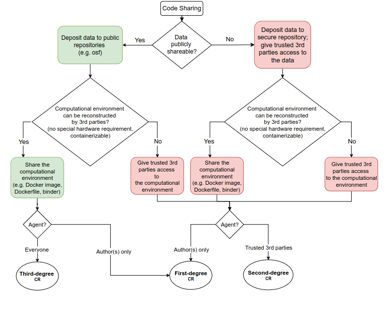
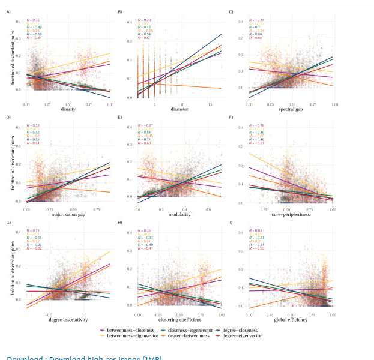

I’m the team lead for “Transparent Social Analytics” in the Department for Computational Social Science at GESIS and I develop tools in R.
ABOUT ME
all open source material
all projects


all publications